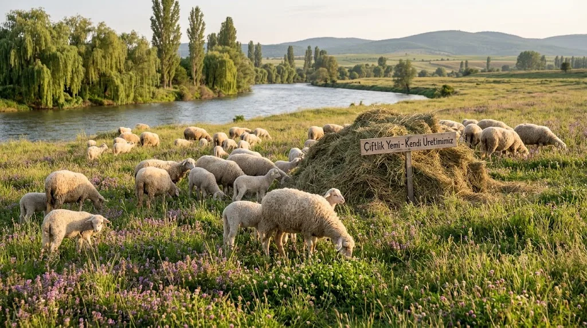
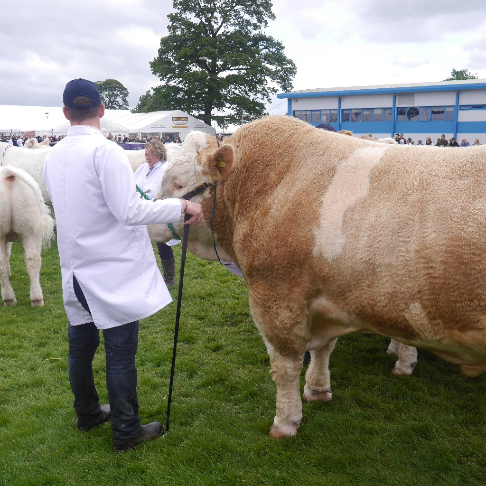
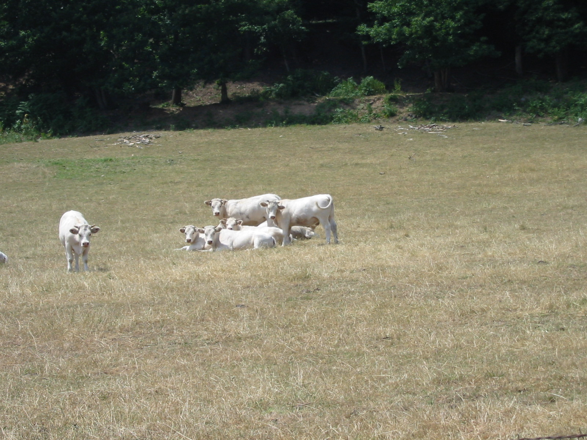
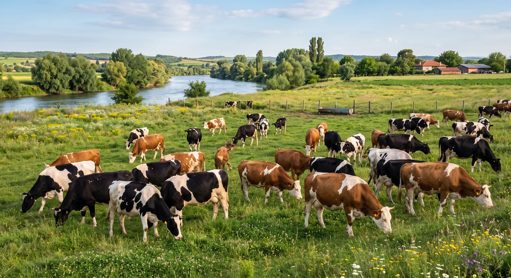
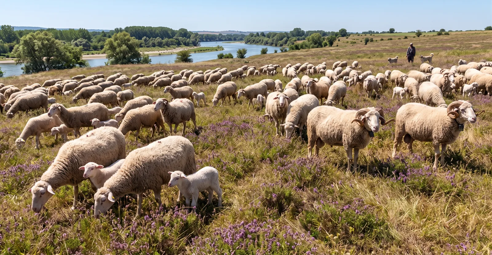
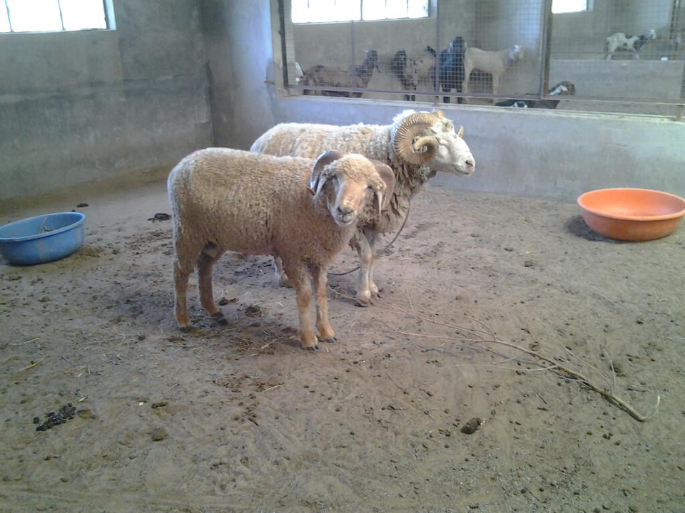
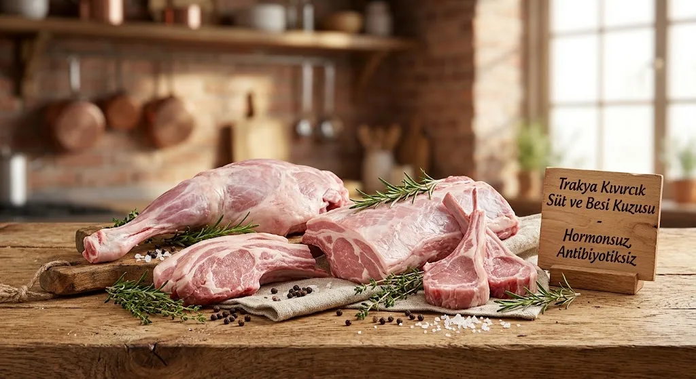

Edirne Meriç'te, sanayi kirliliğinden tamamen uzak Adasarhanlı Köyü'nde; Simental ve Şarole besi danaları, Holstein süt sığırcılığı ve Kıvırcık & Merinos koyunculuğu ile Türkiye'nin en nitelikli karkas et ve doğal çiğ süt üretimi.
Hastalıktan ari Trakya bölgesinde veteriner kontrolünde yetiştiricilik.
Meriç sulak alan meraları ve besleyici yonca/silaj kombinasyonu.
Doğrudan Meriç Nehri'nden alınan temiz su kaynaklarıyla sulanan kaliteli kaba yem kullanımı.
Simental ve Şarole etçi ırklarında üstün et kalitesi, hızlı canlı ağırlık artışı ve mermerimsi yağ dağılımı.
Geniş açık padoklarda Meriç havzası doğal yemleriyle beslenen, yüksek karkas et randımanına (%58-%64) sahip Simental ve Şarole erkek besi sığırları.
Safkan Holstein ırkımızdan el değmeden vakumlu sistemle sağılan, +4°C soğuk tankta muhafaza edilen yüksek verimli, katkısız çiğ çiftlik sütü.
Coğrafi işaretli eşsiz lezzetiyle Trakya Kıvırcık ve yüksek canlı ağırlık kazancıyla bilinen Anadolu Merinosu damızlık koç ve besi kuzuları.
Ada Çiftliği, Edirne'nin Meriç ilçesine bağlı, Türkiye-Yunanistan sınırının sıfır noktasındaki Adasarhanlı Köyü'nde kurulmuştur. Meriç Nehri'nin oluşturduğu alüvyal taban arazisi, mikroklimal iklim şartları ve zengin çayır florası, çiftliğimizin hayvancılık altyapısının temelini oluşturur.
Özel mikroklimal iklim ve zengin doğal bitki örtüsü
Mineralce zengin taban suyu ve verimli taşkın ovası toprakları
Sanayi atıklarından uzak, temiz suyla sulanan yonca ve mısır silajı
Yüksek randımanlı, lezzetli ve mermerimsi karkas et kalitesi
Bölgedeki sanayi kirliliği taşıyan Ergene Nehri hattının aksine, Adasarhanlı'daki tarım ve hayvancılık tesislerimiz doğrudan Meriç Nehri'nden çekilen temiz sulama suyundan faydalanmaktadır.
Yem bitkilerimiz (yonca, fiğ, mısır silajı) ağır metal ve kimyasal atıklardan tamamen korunur.
Hayvanlarımızın içme ve serinleme suyu yüksek mikrobiyolojik hijyen standartlarındadır.
Et ve süt ürünlerimizde kalıntı riski sıfıra indirilerek tüketiciye gerçek gıda güvenliği sağlanır.

Sanayi tesislerinden kilometrelerce uzakta, tertemiz hava ve bereketli su havzası.
Besi tesisimizde et verimi, günlük canlı ağırlık artışı (GCAA) ve karkas kalitesi en yüksek düzeyde olan etçi ırklarımız Simental ve Şarole ile profesyonel yetiştiricilik yürütülmektedir.

Yüksek kas gelişimi, güçlü kemik yapısı ve mükemmel mermerleşme kabiliyeti. Meriç taşkın ovasının kaba yemlerini yüksek oranda ete dönüştüren, Trakya iklimine tam uyumlu güçlü bünye.

Dünyanın en yüksek et verimine sahip etçi sığır ırklarından biri. İnce kemik yapısı, derin göğüs ve olağanüstü but dolgunluğu ile karkas randımanında zirve performans.
Besi danalarımızın beslenme programı 3 aşamalı olarak planlanıp uygulanmaktadır.
| Besi Aşaması | Rasyon İçeriği | Temel Avantajı |
|---|---|---|
|
1
Adaptasyon Dönemi
İlk 30 Gün
|
Meriç çayır otu, kaliteli kuru yonca, sindirim düzenleyici maya ve mineral dengesi. | İşkembe (rumen) adaptasyonu ve nakil/yer değişikliği stresinin önlenmesi. |
|
2
Gelişme Dönemi
Büyüme & Kas Gelişimi
|
Yonca, mısır silajı, fiğ ve çeltik hasadı sonrası anız otlatması entegrasyonu. | İskelet ve kas dokusu gelişimi, sindirim kapasitesinin en üst düzeye çıkarılması. |
|
3
Bitirme (Cila) Dönemi
Son 60-90 Gün
|
Özel kesif yem rasyonu, yerli arpa/mısır kırması ve kaliteli lifli kaba yem. | Mermerimsi yağ tutumu, yumuşak doku ve üst düzey lezzetli et yapısı. |
Rasyon: Meriç çayır otu, kaliteli kuru yonca, sindirim düzenleyici maya ve mineral dengesi.
Rasyon: Yonca, mısır silajı, fiğ ve çeltik hasadı sonrası anız otlatması entegrasyonu.
Rasyon: Özel kesif yem rasyonu, yerli arpa/mısır kırması ve kaliteli lifli kaba yem.
Bizi Trakya'nın en güvenilir besi tesislerinden biri yapan temel prensiplerimiz.
Şap (SAT-1 dahil) ve biyolojik risklere karşı eksiksiz aşı takvimi ve periyodik veteriner kontrolleri.
Dijital kantarlarla aylık canlı ağırlık artışı izleme ve rasyon verimlilik raporlaması.
Yüksek lezzet, yumuşak lif dokusu ve pişirmede suyunu koruyan üstün kalite karkas.
Kasaplar, et entegre tesisleri ve kurbanlık alıcıları için adrese teslim veya çiftlikten teslim imkanı.

Çiftliğimizde sütçü ırk olarak, yüksek genetik kapasiteye ve üstün laktasyon verimine sahip safkan Holstein (Siyah Alaca) ineklerimizle hijyenik ve katkısız günlük çiğ süt üretimi gerçekleştirilmektedir.
Sağımhaneden el değmeden alınan sütler, anında +4°C soğutma tanklarına aktarılır.
Doğal kaba yem ve kaliteli silaj kullanımı sayesinde yüksek kuru madde ve somatik hücre kontrolü sağlanır.
Günlük taze ve soğutulmuş çiğ süt sevkiyatı yerel mandıralara ve anlaşmalı süt işletmelerine ulaştırılır.
Trakya coğrafyasının simgesi olan coğrafi işaretli Trakya Kıvırcık Koyunu ile et ve döl veriminde lider Anadolu Merinosu ırklarımızla zengin mera yetiştiriciliği yürütmekteyiz.

Coğrafi işaret tescilli, kuyruksuz ve ince kuyruklu yapısıyla yağın kas lifleri arasına homojen dağıldığı, kokusuz, yumuşak ve lokum kıvamında eşsiz et kalitesine sahip safkan ırkımız.

İri gövde yapısı, hızlı günlük canlı ağırlık artışı, yüksek ikizlik oranı ve yüksek karkas et randımanı ile öne çıkan, etçi küçükbaş yetiştiriciliğimizin güçlü damızlık dayanağı.

İlkbaharda Meriç Nehri havzasındaki kekikli taze mera otlaklarında, sonbaharda ise hasat sonrası çeltik tavalarında (anızlarda) serbest dolaşımla tamamen doğal ve aromatik besleme.
Damızlık koç seçimi, kurbanlık kuzu veya toptan kasaplık karkas siparişleriniz için doğrudan rezerve edebilirsiniz.
Trakya bölgesi, Avrupa Birliği standartlarında Şap Hastalığından Aşılı Arilik statüsüne sahiptir. Ada Çiftliği olarak bu statünün korunması için tavizsiz biyo-güvenlik kuralları uyguluyoruz.
Çiftlik araç girişlerinde araç yıkama ve havuz dezenfeksiyonu uygulanır. Ziyaretçi ve personel hijyen tünelinden geçirilmeden çiftlik avlusuna ve barınaklara alınmaz.
Sulak alan ve çeltik tarlaları yakınlığı sebebiyle Culicoides sineklerine (Mavi Dil taşıyıcıları) karşı periyodik larvasit, sisleme ve biyolojik mücadele aralıksız sürdürülür.
Tüm büyükbaş ve küçükbaş sürümüz Şap, Mavi Dil ve Brucella aşıları ile koruma altındadır. Sürüye dışarıdan dahil edilen tüm canlılar 21 günlük karantina sürecine tabi tutulur.
Canlı besi danası satışı, kurbanlık rezervasyonu, taze çiğ süt veya damızlık Kıvırcık kuzu talepleriniz için aşağıdaki formu doldurabilirsiniz.
Bilgilerinizi iletin, çiftlik yetkilimiz gün içinde sizi bilgilendirsin.
Ada Çiftliği yetkilisi en kısa sürede paylaştığınız telefon numarasından sizinle iletişime geçecektir.
Ada Çiftliği Besi ve Süt Hayvancılığı
Adasarhanlı Köyü Yolu, 22600 Meriç / EDİRNE
(22.36 Meriç-İpsala İl Yolu üzeri)
Haftanın 7 Günü: 07:00 – 19:30
Ziyaret ve kurban seçimi için önceden bilgi vermeniz önerilir.
İşleminiz tamamlandı.